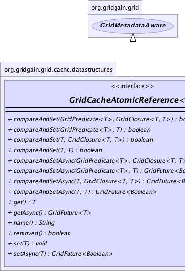
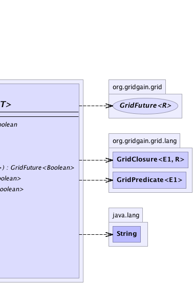

|
|

|

|
|

|

|

|
GridGain™ 3.6.0c
Community Edition |
|||||||||
| PREV CLASS NEXT CLASS | FRAMES NO FRAMES | |||||||||
| SUMMARY: NESTED | FIELD | CONSTR | METHOD | DETAIL: FIELD | CONSTR | METHOD | |||||||||
public interface GridCacheAtomicReference<T>
This interface provides a rich API for working with distributed atomic reference.
Note that atomic reference is only available in Enterprise Edition.
GridCacheAtomicReference.get() synchronously gets current value of an atomic reference.
GridCacheAtomicReference.set(Object) synchronously and unconditionally sets the value in the an atomic reference.
compareAndSet(...) synchronously and conditionally set the value in the an atomic reference.
GridCacheAtomicReference.name() gets name of atomic reference.
| Wiki | |
| Forum |
GridCache.atomicReference(String),
GridCache.atomicReference(String, Object, boolean)
|  |  |
| Method Summary | |
|---|---|
boolean |
compareAndSet(GridPredicate<T> expValPred,
GridClosure<T,T> newValClos)
Conditionally sets the new value. |
boolean |
compareAndSet(GridPredicate<T> expValPred,
T newVal)
Conditionally sets the new value. |
boolean |
compareAndSet(T expVal,
GridClosure<T,T> newValClos)
Conditionally sets the new value. |
boolean |
compareAndSet(T expVal,
T newVal)
Conditionally sets the new value. |
GridFuture<Boolean> |
compareAndSetAsync(GridPredicate<T> expValPred,
GridClosure<T,T> newValClos)
Conditionally asynchronously sets the new value. |
GridFuture<Boolean> |
compareAndSetAsync(GridPredicate<T> expValPred,
T newVal)
Conditionally asynchronously sets the new value. |
GridFuture<Boolean> |
compareAndSetAsync(T expVal,
GridClosure<T,T> newValClos)
Conditionally asynchronously sets the new value. |
GridFuture<Boolean> |
compareAndSetAsync(T expVal,
T newVal)
Conditionally asynchronously sets the new value. |
T |
get()
Gets current value of an atomic reference. |
GridFuture<T> |
getAsync()
Gets both current value of an atomic reference asynchronously. |
String |
name()
Name of atomic reference. |
boolean |
removed()
Gets status of atomic. |
void |
set(T val)
Unconditionally sets the value. |
GridFuture<Boolean> |
setAsync(T val)
Unconditionally sets the value asynchronously. |
| Methods inherited from interface org.gridgain.grid.GridMetadataAware |
|---|
addMeta, addMetaIfAbsent, addMetaIfAbsent, allMeta, copyMeta, copyMeta, hasMeta, hasMeta, meta, putMetaIfAbsent, putMetaIfAbsent, removeMeta, removeMeta, replaceMeta |
| Method Detail |
|---|
String name()
T get()
throws GridException
GridException - If operation failed.
GridFuture<T> getAsync() throws GridException
GridException - If operation failed.
void set(T val)
throws GridException
GridException - If operation failed.val - Value.GridFuture<Boolean> setAsync(T val) throws GridException
GridException - If operation failed.val - Value.
true than
value have been updated.
boolean compareAndSet(T expVal,
T newVal)
throws GridException
expVal is equal
to current value respectively.
GridException - If operation failed.expVal - Expected value.newVal - New value.
true than value have been updated.
boolean compareAndSet(T expVal,
GridClosure<T,T> newValClos)
throws GridException
expVal is equal
to current value respectively.
GridException - If operation failed.expVal - Expected value.newValClos - Closure which generates new value.
true than value have been updated.boolean compareAndSet(GridPredicate<T> expValPred, GridClosure<T,T> newValClos) throws GridException
expValPred is
evaluate to true.
GridException - If operation failed.expValPred - Predicate which should evaluate to true for value to be set.newValClos - Closure which generates new value.
true than value have been updated.boolean compareAndSet(GridPredicate<T> expValPred, T newVal) throws GridException
expValPred is
evaluate to true.
GridException - If operation failed.expValPred - Predicate which should evaluate to true for value to be setnewVal - New value.
true than value have been updated.GridFuture<Boolean> compareAndSetAsync(T expVal, T newVal) throws GridException
expVal
is equal to current value respectively.
GridException - If operation failed.expVal - Expected value.newVal - New value.
true than value
have been updated.GridFuture<Boolean> compareAndSetAsync(T expVal, GridClosure<T,T> newValClos) throws GridException
expVal
is equal to current value respectively.
GridException - If operation failed.expVal - Expected value.newValClos - Closure generates new value.
true than value have been updated.GridFuture<Boolean> compareAndSetAsync(GridPredicate<T> expValPred, GridClosure<T,T> newValClos) throws GridException
expValPred
is evaluate to true.
GridException - If operation failed.expValPred - Predicate which should evaluate to true for value to be set.newValClos - Closure generates new value.
true than value have been updated.GridFuture<Boolean> compareAndSetAsync(GridPredicate<T> expValPred, T newVal) throws GridException
expValPred
is evaluate to true.
GridException - If operation failed.expValPred - Predicate which should evaluate to true for value to be set.newVal - New value.
true than value have been updated.boolean removed()
true if an atomic reference was removed from cache, false otherwise.
|
GridGain™ 3.6.0c
Community Edition |
|||||||||
| PREV CLASS NEXT CLASS | FRAMES NO FRAMES | |||||||||
| SUMMARY: NESTED | FIELD | CONSTR | METHOD | DETAIL: FIELD | CONSTR | METHOD | |||||||||
|
GridGain - Real Time Big Data
|
|
|
|